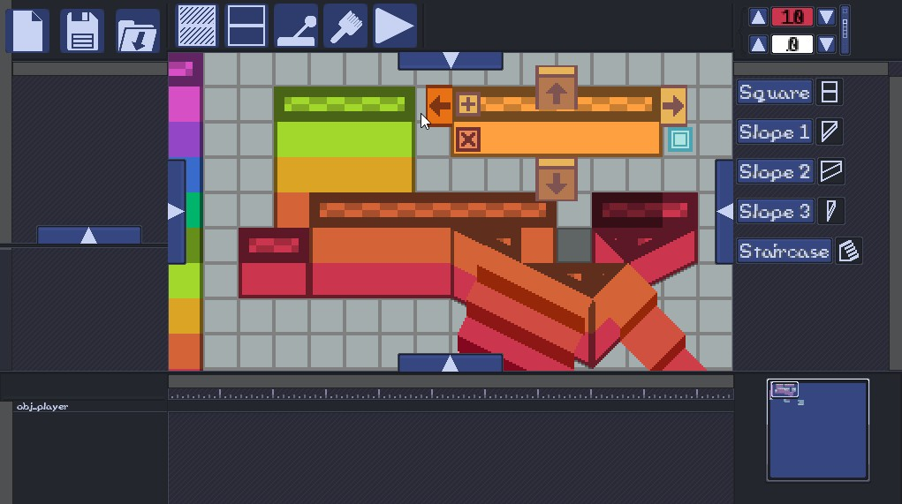
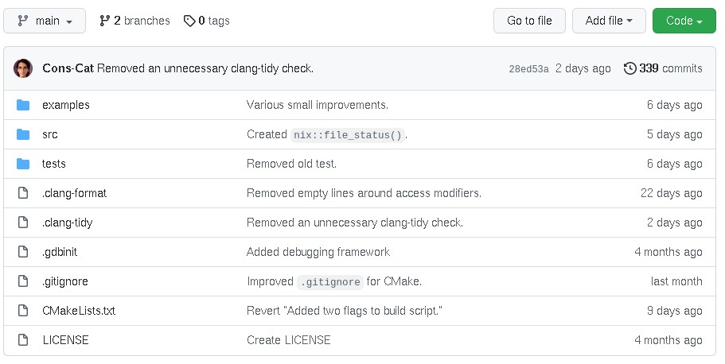
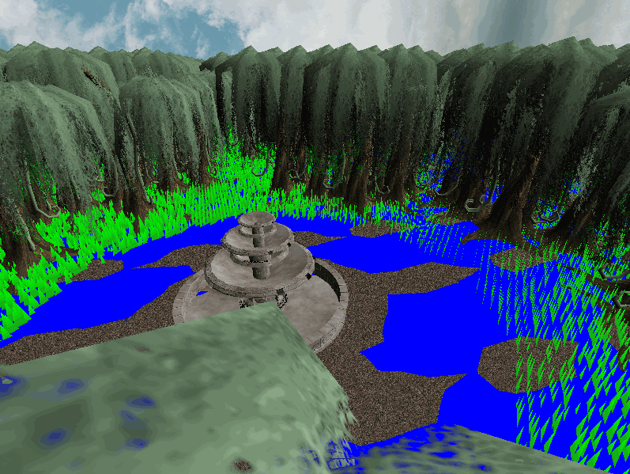
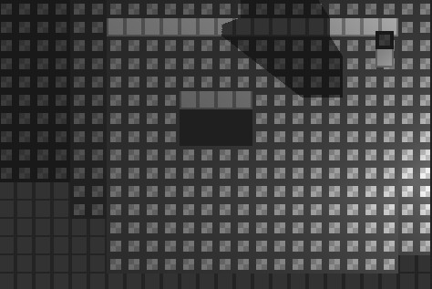
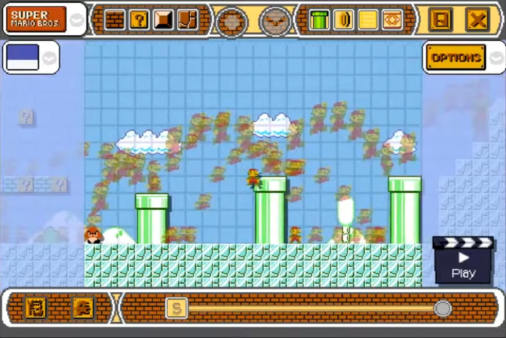
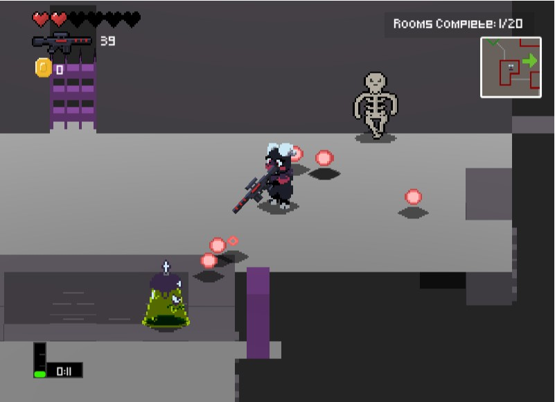

Here are some of my more interesting projects.

Superstar Game Suite
GitHub
|

libCat
GitHub
|

Swamp D3D Scene
GitHub
|

Spatial Hash Raytracer
GitHub
|

Super Fangame MakerSuper Fangame Maker is a level editor awarded "The Most Overlooked" for MFGG Awards 2015. It has many features cloned from Super Mario Maker and based on fandom references, including item boxes, costumes, level themes, multiple gameplay engines, dynamic 9-slices, saving/loading levels, and more. I chronicled its development on my YouTube channel. The most notable video reached 21k views. |

Purgatory
Play Here!
|